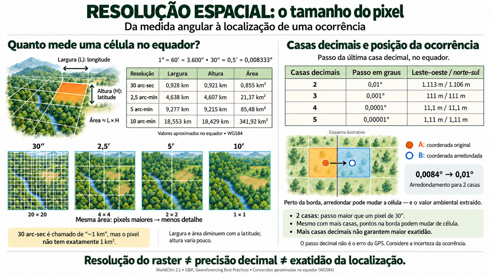

CAPÍTULO 07 · D → M · preditores
Associar cada ocorrência ao ambiente
A equipe extrai as condições ambientais e escolhe o conjunto que seguirá para os ajustes.
Base no curso: slides 219–265; 281; 380.
Os pontos foram conferidos. Agora a equipe precisa descrever o ambiente de cada local de coleta. Ela abre as camadas de clima e relevo e pergunta se sua resolução e seu período combinam com a pergunta do estudo.
A célula como unidade de informação
Um raster organiza valores em células. Extensão, tamanho do pixel, alinhamento e sistema de referência determinam como as camadas se combinam. Reamostrar para uma malha mais fina não cria observações novas. Por isso a equipe verifica a geometria e as unidades antes de comparar valores.

predictors <- worldclim_global(var = "bio", res = 2.5, path = data.folder)
predictors <- crop(predictors, predictors.crop)O roteiro usa WorldClim 2.1, com climatologia de 1970–2000. O ano de uma coleta recente não altera esse período de referência. A equipe registra a compatibilidade temporal do conjunto e mantém essa informação na interpretação do estudo.
Extrair os valores dos pontos
presence.points.model <- presence.points.clean.no.filter %>%
sdm_extract(
data = ., x = "decimalLongitude", y = "decimalLatitude",
env_layer = predictors, filter_na = FALSE
)O script acrescenta as camadas complementares habilitadas, preserva a extração completa e retira registros com valores ausentes nos preditores utilizados. Antes de aceitar a perda de um ponto, a equipe confere se ele ficou fora da cobertura, em uma célula sem dados ou em uma localização incorreta.
presence.points.clean.env <- presence.points.modelReduzir redundância entre variáveis
A seleção ocorre depois de preparar presenças e background, conforme os capítulos 8 e 9. Primeiro, a equipe avalia a redundância dos preditores e depois usa a seleção embutida do covsel. O objetivo é levar um conjunto definido e mais compacto para comparar os algoritmos.
covdata <- rbind(presence.points.model, background.points.model)
pa <- covdata$pr_ab
covdata <- data.frame(covdata[, 5:ncol(covdata)])covdata.filter <- covsel::covsel.filteralgo(
covdata = covdata, pa = pa, corcut = 0.8
)Esse filtro combina correlações e informação da resposta para priorizar variáveis. Ele não é simplesmente uma matriz calculada apenas nas presenças. A exclusão opcional de Bio08, Bio09, Bio18 e Bio19 está desativada: remove.artifact.vars <- FALSE. Uma descontinuidade precisa ser examinada na fonte e na região antes de ser tratada como erro.
covdata.embed <- covsel::covsel.embed(
covdata = covdata.filter, pa = pa,
algorithms = c("glm", "gam", "rf"),
ncov = ceiling(log2(length(which(pa == 1)))),
maxncov = ceiling(nrow(presence.points.model)/10) + 1,
nthreads = max(1L, parallel::detectCores() - 4L, na.rm = TRUE)
)predictors.final.keep <- sort(covdata.embed$ranks_2$covariate)
predictors.final.keepA PCA posterior resume a variação do ambiente disponível no background e projeta as ocorrências nos mesmos eixos. Ela ajuda o grupo a visualizar cobertura ambiental; não substitui as variáveis selecionadas para o ajuste.